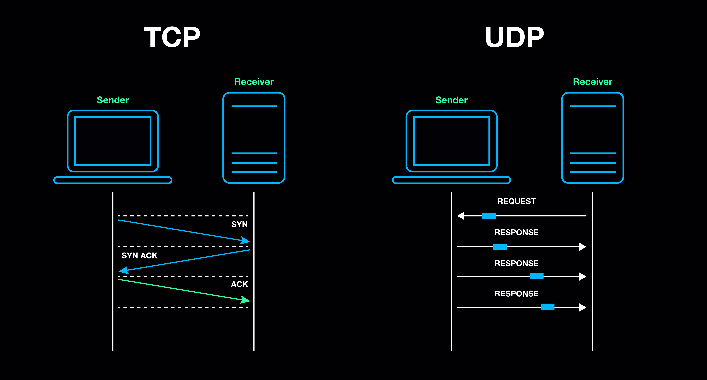

ID: 1220003
Description: Completed various projects in networking, web development, and more. Skilled in HTML, CSS, and Python. Enjoys hiking and photography.
ID: 1221808
Description: Specializes in database management, cybersecurity, and software development. Proficient in Java, SQL, and enjoys playing guitar.
Transmission Control Protocol (TCP) is one of the core protocols of the Internet protocol suite. It ensures reliable, ordered, and error-checked delivery of data between applications running on devices connected to a network.
